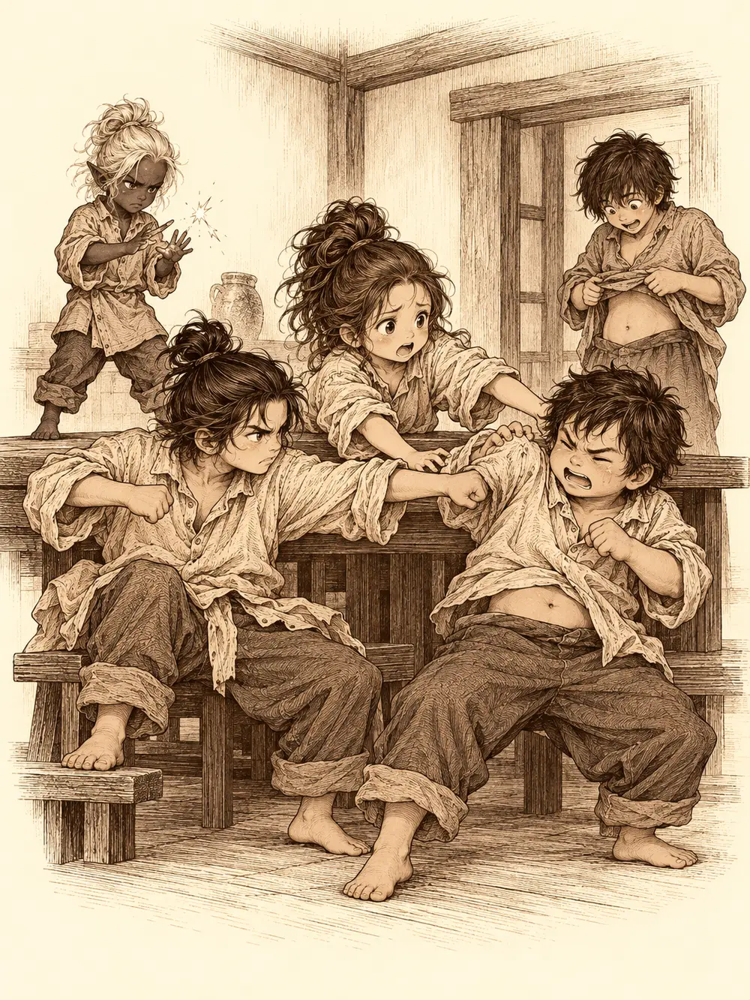

Capítulo 132
Pequeños
Libro VIII · El hilo maldito
Sho olía a gente. Desde el sur llegaban refugiados a diario, con fardos a la espalda y niños dormidos en brazos, y la capital no sabía dónde meterlos ni con qué alimentarlos. Calista pasaba los días en palacio entre pergaminos y cifras que nunca cuadraban. Kazuki ayudaba en la evacuación y en mantener el orden en las calles. Banzo había vuelto de su visita a Rua con un peso en el pecho que no sabía cómo soltar.
Esa noche, junto a la cama de la regente dormida, se lo había contado a Calista y a Gelbreak. A Rua le daban miedo los nobles. Oía susurros en la oscuridad. Banzo insistía en que aquello no parecía simple cansancio. Gelbreak se preguntó si no habría algún noble detrás y se ofreció a husmear por palacio sin que lo vieran. Calista lo creía posible, quizá alguna maniobra antes de las votaciones, pero no tenían pruebas y no convenía alertar a quien pudiera estar moviendo los hilos. Banzo arropó a Rua y revisó las ventanas antes de que llegaran las sirvientas. Al salir, cuando preguntó por unas manzanas, Gelbreak le pisó el pie con todas sus fuerzas: se le había olvidado comprarlas y no quería que Calista se enterara. Cuando ella se adelantó hacia la base, el drow le pidió en voz baja que consiguiera unas manzanas ácidas por el camino.
Al día siguiente, en la base, Kazuki y Calista tenían una conversación pendiente y la aplazaron cuando entró Banzo derribando la puerta, como de costumbre. Gelbreak y Lor Miau se miraban fijamente, el drow con la mano encendida en un tono morado y el gato con una pata del mismo color, a punto de destrozarse el uno al otro. Calista cogió al gato en brazos.
"¿Podéis, por favor, no mataros?".
Banzo dejó una bolsa encima de la mesa. Estaba llena de manzanas verdes.
"Esto es lo que se te había olvidado de la lista, ¿no?".
Gelbreak puso cara de que nada, que no, que eran esas, y le dio un mordisco a una con un disgusto evidente. Banzo repartió las demás. Una anciana muy amable lo había reconocido en la calle y se las había regalado, explicó, porque era Banzo. Kazuki cortó la suya en gajos muy limpios con la punta de una flecha. Jin se comió la suya entera. Calista probó la suya por no hacerle un feo.
Hablaron del frente mientras comían. Jin se quejó de que en el sur solo mandaban críos a pelear, y Calista le contestó que era lo que había: estaban intentando traer tropas del norte, pero tardaban. Banzo sacó de la mochila un manojo de llaves y unos papeles y los tiró sobre la mesa. Eran las llaves del barco de Guxi, que él le había encargado entregar al shogunato. Quizá sirviera para llevar tropas o refugiados. Calista se guardó las llaves.
Entonces Kazuki se encogió.
Primero se le quedó la ropa grande. Luego se le quedaron colgando las piernas de la silla, moviéndolas en el aire. A Jin le salió en la cara un bigote negro que no había tenido nunca, porque la quemadura no le dejaba crecer el pelo. Banzo se miró las manos y vio unas manos de niño, gordas y torpes, y cuando fue a la puerta descubrió que el pomo le quedaba a la altura de los ojos. Gelbreak se había vuelto un drow diminuto, enfurruñado y con los mofletes encendidos. Y Calista se vio también pequeña, con una cara redonda y unos ojos que de repente parecían enormes.
Conservaban la cabeza. Sabían quiénes eran y qué habían vivido. Pero sus cuerpos eran cuerpos de niños, débiles y lentos, y cuando Gelbreak movió los dedos para deshacer aquello, solo le salieron unas chispitas que se apagaron enseguida. Kazuki trató de levantar su espada y se cayó de culo. Calista intentó separar a Banzo y a Jin, que ya se estaban dando puñetazos por ver quién tenía la culpa, y descubrió que no tenía fuerza para hacerlo.
"¿En serio de pequeña yo era la más normal?", dijo.
Kazuki, por su parte, no conseguía controlar su forma: la barriga le aparecía y desaparecía como si respirara por su cuenta.
"¿De dónde has sacado estas manzanas?", le preguntó Calista a Banzo.
"Una señora muy amable".
"No hay que coger cosas que te dan por la calle", le dijo Gelbreak, y le dio una colleja de un salto.
Había que encontrar a esa anciana.
Salieron de la base como una excursión de escuela. Gelbreak llevaba de la mano a Calista y le prometía protegerla de cualquiera que se acercara. Banzo se hizo una lanza atando un cuchillo de cocina a un palo que Calista encontró entre los arbustos, después de que tres de ellos intentaran trepar unos encima de otros para coger una rama y se cayeran todos al suelo. Jin iba con las manos a la espalda, como le había enseñado su padre. En algún momento se metieron todos debajo de una gran túnica, uno encima de otro, para parecer un adulto, y la gente de la calle se quedó mirando aquella torre que caminaba torcida, con media cabeza asomando por arriba y medio trasero por abajo.
En los barrios bajos fue peor. Un tendero los echó de su puesto a gritos y Banzo le dio una patada en la espinilla antes de salir corriendo. Un shinobi que pasaba por allí les lanzó un dardo, sacó la katana y se les vino encima. Gelbreak se le plantó delante, convencido de que aún era un guerrero de verdad, y acabó con un corte en el costado que se ató con un pañuelito, muy digno. Banzo intentó colarse entre las piernas del hombre y el shinobi lo atrapó en el aire y lo sostuvo lejos de su cuerpo mientras el niño le daba con el palo sin alcanzarlo.
"Cuidado, ninja", se burlaba el hombre, "que me vas a dar".
Jin se había marchado por su cuenta, sediento. En la puerta del casino lo rechazaron por niño y él se fue indignado a una taberna, donde pidió una cerveza y luego otra, y aquel cuerpo pequeño y cansado no estaba hecho para eso.
Alguien tuvo una idea. Calista se puso a dar vueltas alrededor del shinobi provocándolo, no me pillas, no me pillas, mientras alguien se le metía por debajo y le ataba los cordones de una bota con la otra. Ninja pedorro, le gritaban desde abajo, culo de pollo. El shinobi fue a por ella y se fue de bruces contra el suelo. Banzo le clavó los dientes en las manos hasta que lo soltó, y Calista agarró de la mano a sus compañeros y tiró de ellos para correr.
Cuando salían del callejón oyeron una voz que no parecía de este mundo.
"¿Te estabas metiendo con mis amigos? Te vas a enterar".

Del callejón salió un resplandor. Calista se asomó con mucho cuidado, de lado. Donde había caído el shinobi solo quedaba un montón de polvo. No había nadie más.
Kazuki encontró a Jin dando tumbos por la calle y lo llevó con los demás. En el puerto, los almacenes no sabían nada de ninguna partida de manzanas verdes, pero un trabajador se acordaba de una vieja encorvada y con capucha que solía pasar por allí, siempre hacia el norte. Siguieron esa pista entre heridas, borracheras y una cuerda con la que Banzo se empeñó en atarlos a todos para no perderse, porque ya nadie los tomaba en serio.
En un callejón, una pelota gigante pasó botando delante de ellos. Detrás corrían dos muchachas de diecisiete o dieciocho años. Una iba a cuatro patas.
"¡Pelota, pelota!".
Era la voz de Arwen, pero de mujer. La otra era Shizuka, alta, con una espada en la mano. Las niñas habían crecido. Jin se acercó a ellas muy contento.
"Shizuka, cuánto has crecido".
Shizuka le puso la espada en la cara y quiso saber quién era. Arwen saltó encima de Banzo, le apretó los mofletes como si fueran de masa, y después, de repente, retrocedió.
"Ya sé lo que son. Son malos. Nos han robado la juventud".
Arwen sujetó a Banzo como a una pelota y le dio a Jin un golpe en la cabeza con el palo. A Shizuka empezaron a salirle chispas de las manos, una luz que zumbaba y crecía y que no presagiaba nada bueno. Jin le dijo que si le pegaba se quedaba sin cena. No funcionó. Banzo le recordó a Arwen aquel día en la hamaca en que le contó un cuento y le dijo por primera vez que era la guardiana y diosa protectora de los bosques, y le enseñó el tatuaje del pecho y le abrió los brazos para que lo oliera bien. Arwen le olfateó el sobaco.
"Banzo".
La pelea se acabó. El alivio de Banzo duró lo justo para que se le ocurriera otra cosa.
"Los que han salido corriendo se merecen un escarmiento".
Arwen llamó a unos lobos y se convirtió en uno de ellos. Encontraron a Kazuki y lo llevaron rodando dentro de un barril. A Gelbreak y a Calista los tiraron al agua del puerto. Calista protestó, y el juego siguió de todos modos, entre aguadillas y risas que no eran las suyas. Se sintió pequeña e indefensa como hacía años que no se sentía, y mordió a Shizuka en el brazo para soltarse. Shizuka la lanzó por los aires.
Arwen se convirtió en gaviota, la atrapó al vuelo, la paseó gritando mía, mía por encima del puerto y la soltó. Calista cayó al agua de golpe. Gelbreak nadó hasta ella, la empujó por el agua como a una caja hasta la orilla y la sacó en brazos. Lloraba, dolorida, roja como una gamba.
"Tranquila", le decía el drow, "no pasa nada".
Cuando Arwen dejó la forma animal, ya volvía a ser una niña. Los demás seguían siendo pequeños.
La anciana iba calle arriba, encorvada, con su capucha. La alcanzaron sin dificultad: andaba muy despacio.
"¿Qué queréis, niños?".
"Volver a mi forma normal".
"¿Y no es esta tu forma normal?".
Mientras hablaban, Banzo le cogió una manzana del cesto y le dio un bocado. Se encogió otra vez, hasta quedar sentado en el suelo como un bebé. Calista le pidió a Shizuka que cortara una manzana en trocitos para dársela a la pobre anciana, que con lo que trabajaba seguro que tenía hambre, aunque la anciana decía que no tenía dientes. Entre todos intentaron sujetarla para hacérsela comer.
La anciana ya no estaba en sus manos. Estaba de pie, sonriendo.
"¿Os ha gustado mi pequeño truquito?".
Era Koishi.
Uno de los niños se le tiró encima para morderla y Koishi lo apartó con el pie. Jin le golpeó la rodilla con una katana que apenas podía levantar. Banzo, con su cuerpo de bebé, se esforzó tanto por recuperar su tamaño que llegó a hincharse un momento antes de desinflarse otra vez. Ni exigencias ni golpes la convencían.
"No os lo voy a poner tan fácil, chiquitín. ¿No os habéis divertido siendo niños?".
Shizuka dijo que Koishi le caía muy bien, que habían estado jugando juntas un rato.
Fue entonces cuando a alguien se le ocurrió decir que habían visto a Gur comiendo manzanas. A Koishi se le abrieron mucho los ojos. ¿Gur se había comido una de sus manzanas? Lo estaba buscando. Le dijeron que estaba en su viejo templo del sur, y que ellos la llevarían si los devolvía a su tamaño. Koishi aceptó. Sacó una poción del bolsillo y estaba a punto de usarla cuando Shizuka recitó unas palabras y los aceleró a todos.
"Ya está, ya pueden correr como una persona normal".
"Ah", dijo Koishi, y se guardó la poción sin quitarle el corcho. "Entonces ya no hace falta que os dé nada".
Intentaron robársela. Fallaron todos. Koishi echó a andar hacia el sur, hacia el templo donde esperaba encontrar a Gur, y detrás de ella se pusieron en marcha Calista, Gelbreak, Jin, Banzo y Kazuki, cinco niños acelerados con las piernas cortas y mucha prisa. Arwen y Shizuka se quedaron jugando con la pelota en el callejón.
Lejos de la ciudad, en las ruinas del refugio de Kurobane, Danifae exigió hablar con la sombra. Osuray le respondió con la voz del muchacho: llevaba días moviéndolo como a una marioneta sin que nadie se diera cuenta. A la drow no le interesaba la guerra. Quería lo que le había pedido en una nota. Kurobane protestó, agotado, que tenía una misión contra Otakemaru. Danifae empezó a recitar en abisal, y el espíritu se encogió de terror dentro del cuerpo hasta hacerlo caer de rodillas. Había aprendido aquel ritual, le dijo, cuando él la mandó a buscarlo, y tenía su propia protección: si ella moría, la sombra desaparecería con ella. Osuray aceptó seguir con el encargo. Cuando la drow se fue, la voz del maestro y la del discípulo se volvieron una contra otra, y a Kurobane le volvió a la memoria la destrucción de su templo.
Cruzó el portal hasta la base de Sho. Calista, que estaba trabajando, lo vio entrar con un zarpazo en la cara y un ojo rojo y otro azul, y no supo quién de los dos controlaba aquel cuerpo. Él le dijo que no era Osuray. Ella le contestó que quería pruebas antes de fiarse. Kurobane se encerró en su cuarto, y desde fuera solo se oyó un grito ahogado. Al cabo de un momento Calista llamó a la puerta con un botiquín en la mano: no pensaba meterse en sus discusiones, pero tampoco iba a dejar que se desangrara. Él se curó las heridas, salió en silencio, le hizo una reverencia y se fue hacia el bosque.
En la puerta se cruzó con Kazuki. El noble se ofreció a ayudar en lo que hiciera falta, y Calista le recordó que aún le debía unas cuantas respuestas.
"Por eso he venido", dijo él, y se sentó.